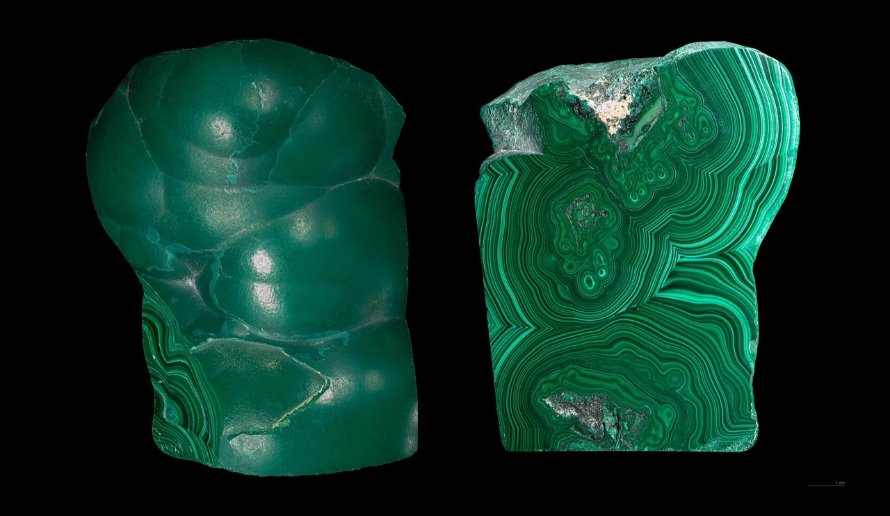
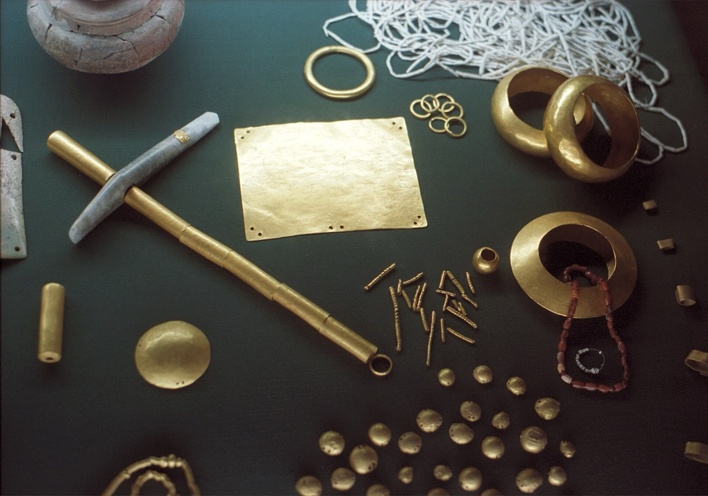

Медь в зелёном камне
В конце второй главы осталось ограничение: вещь не могла быть больше самородка. Рядом с самородной медью в земле лежат цветные камни. Ярко-зелёный называется малахитом, синий называется азуритом. Иногда в этих камнях видны кусочки самородной меди.

Два куска малахита из Катанги в Демократической Республике Конго. Слева видна природная округлая поверхность, такой камень видел мастер выплавки. Справа камень разрезали и отполировали, чтобы показать зелёные полосы.
Фото: Didier Descouens, CC BY-SA 3.0, Wikimedia Commons

Задолго до того, как научились получать медь из камня, люди делали бусы из малахита и азурита. В Чатал-Хююке на территории нынешней Турции их делали в 7000-х годах до н. э. С древности малахит служил и зелёным пигментом, веществом, которое придаёт краске цвет.
Около 5000 года до н. э. люди начали получать медь из таких камней с помощью огня. Это произошло где-то на юго-востоке Европы или в Малой Азии. Самые ранние надёжно датированные следы найдены в Беловоде в Сербии. Поселение принадлежало людям культуры Винча. Его находки относятся примерно к 5000 году до н. э.
Примерно тем же временем датируют медные вещи из Юмуктепе, сделанные заливкой жидкого металла. Это холм в Мерсине, на территории нынешней Турции. Во внутреннем строении этих вещей видят признак того, что медь получили из камня. Но отходов такого получения меди там не нашли, поэтому это пока предположение, а не надёжное свидетельство.
Как нашли этот способ, мы не знаем. Часто рассказывают о случайности в гончарной печи, где обжигают глиняную посуду. Но сильного жара мало. Камень должен ещё попасть туда, где огню не хватает воздуха. И кто станет искать в золе маленькие красные капли? Случайность возможна, но эта история не установленный факт. Известно время: около семи тысяч лет назад.
Камень, из которого можно получить металл, называют рудой. Получение металла из руды с помощью жара и древесного угля называется выплавкой. Древесный уголь получают, нагревая дерево почти без воздуха. Ниже разберёмся с ним подробнее.
Выплавить и расплавить не одно и то же. При плавлении твёрдое вещество становится жидким. Расплавленная руда остаётся рудой. При выплавке вещество руды разбирается, и из него получается металл.
Расплавить медь и залить её в нужную форму значит заняться литьём. В находках литьё появляется примерно одновременно с выплавкой.
Жаркий огонь, чаша и форма
Почему костра мало
Костёр недостаточно горяч, чтобы расплавить медь. Во второй главе пламя и угли костра достигали 600 °C и выше. Отдельный уголёк может быть горячее. Но для плавления весь кусок меди должен достичь 1085 °C.
Помогают три вещи: другое топливо, поток воздуха и стенки вокруг огня.
Топливо. Вместо дров берут древесный уголь. Чтобы его получить, дерево нагревают почти без воздуха. Вода и всё, что может уйти в виде газа, покидают древесину. Остаётся лёгкое чёрное вещество. Это в основном углерод, C, знакомый по второй главе.
Воздух. В древесном угле много мелких отверстий. От потока воздуха он разгорается сильнее. Управляя этим потоком, можно управлять жаром. Древесный уголь может гореть при температуре выше 1100 °C.
Стенки. Тепло нужно удержать. Без стенок оно слишком быстро уходит от места, где лежит медь. Слой древесного угля, через который нагнетают воздух, может достигать от 1200 до 1300 °C.
Через духовую трубку человек ртом подаёт воздух в уголь. Для неё достаточно полого тростника с глиняным наконечником. Обычно предполагают, что первые мастера пользовались трубками, но от самых ранних выплавок ни одной не сохранилось. Лёгкие человека дают мало воздуха. На египетском изображении примерно 2400 года до н. э. шесть человек дуют, чтобы поддерживать жар у одной маленькой глиняной чаши с металлом.

Современная живописная копия сцены из гробницы Рехмира в Египте, около 1504–1425 годов до н. э. Сидящий работник дует через трубку в огонь и держит инструмент для захвата горячих вещей. Это другая, гораздо более поздняя сцена, чем упомянутое выше изображение шести человек.
Источник: The Metropolitan Museum of Art, копия: Nina de Garis Davies, CC0, Wikimedia Commons

Мехи выталкивают воздух при сжатии. Ими могли пользоваться уже тогда же, когда трубками. Один человек с мехами подаёт гораздо больше воздуха, чем один человек с трубкой.
Одно свечение ещё не означает, что медь может расплавиться. Она начинает светиться при 525 °C, задолго до температуры плавления.
Выплавка в чаше
Для самой простой выплавки нужна глиняная чаша размером примерно с салатницу. Такой сосуд для сильного нагрева называется тиглем. Ещё нужны дроблёный малахит, древесный уголь и духовая трубка. Самые ранние тигли найдены в Восточной Европе и Иране. Они относятся к шестому или пятому тысячелетию до н. э. Это широкие неглубокие глиняные чаши. Их форма подходит для нагрева сверху.
Первые тигли делали из обычной гончарной глины, без особой стойкости к жару. Глина не горит. Сильный жар размягчает её и превращает часть глины в стекло. При ещё большем нагреве она течёт. При выплавке такая глина уже близка к своему пределу. При температуре около 1200 °C расплавились глиняный наконечник для подачи воздуха и глиняная крышка, а также поверхность тигля со стороны воздушной струи. Но глина плохо проводит тепло. Плавится лишь тонкий поверхностный слой, поэтому стенка под ним остаётся твёрдой и удерживает содержимое. Глина, которая выдерживает больше 1500 °C, называется огнеупорной глиной.
В чашу насыпают уголь. Зажигают и дуют. Добавляют руду. Продолжают дуть то в одно место, то в другое. Если повезёт, где-то жар продержится достаточно долго, чтобы получилась медь. В итоге остаются стекловидные отходы и несколько маленьких капель металла. Такие капли называют корольками.
Стекловидные отходы называются шлаком. Это расплавившаяся пустая порода, которая была вместе с рудой, зола и частицы самой чаши. При самых ранних небольших выплавках шлака могло оставаться совсем мало.
Много меди пропадало. В раннем шлаке её до сих пор немало. В медном районе Файнан на территории нынешней Иордании шлак римского времени содержит гораздо меньше меди, чем шлак первых местных выплавок. На такой результат ушло несколько тысяч лет. Даже сегодня повторить раннюю выплавку удаётся не всегда.
Как придать жидкой меди форму
Для литья нужен тигель поменьше. Его придётся поднять, когда он горячее 1085 °C. Значит, нужно чем-то держать очень горячие вещи. Нужна и литейная форма, полость с очертаниями будущей вещи. Медь плавят и выливают в эту полость. Полученная вещь называется отливкой.
В современном опыте попробовали лить медь средствами медного века, времени, когда люди начали пользоваться медью из руды. Горн, устройство для получения сильного жара, сделали из ямы, обмазанной глиной. Тигель засыпали углём. Воздух подавали мехами из кожаных мешков. От того времени мехов не сохранилось, поэтому подачу воздуха устроили по образцу находки более позднего времени, бронзового века. На плавление ушло от двух до трёх с половиной часов.
Расщеплённая ветка служила щипцами, которыми захватывают горячий тигель. В медь погружали свежий ивовый прут. Им на ощупь проверяли, остались ли твёрдые куски. Формы делали из глины с песком: две части глины на одну часть песка.
Деревянные щипцы касаются тигля лишь пока его поднимают и выливают медь. За это короткое время дерево не успевает прогореть насквозь. В свежесрезанном дереве много воды. Жар сначала превращает эту воду в пар. Только потом дерево может нагреться настолько, чтобы обуглиться и загореться. Зелёный ивовый прут, погружённый в жидкую медь, был свежесрезанным. Вода в нём помогает защитить его точно так же.
Ни одной формы для ранних медных топоров юго-востока Европы пока не нашли. Возможно, формы делали из песка. Он рассыпается, и находить уже нечего.
Форму можно сделать и иначе. Вылепи вещь из воска. Покрой её глиной. Нагрей, чтобы воск вытек. В оставшуюся полость залей металл. Это литьё по выплавляемой модели. Среди самых ранних известных примеров есть золотые вещи из могильника Варна в Болгарии, датированные 4550–4450 годами до н. э. К ним относится и медный амулет, маленькая вещь для защиты, которую носили на себе, из Мехргарха в нынешнем Пакистане. Его нашли в слое, датированном 4500–3600 годами до н. э.

Золотые вещи из могильника Варна в Археологическом музее Варны в Болгарии. Большинство видимых вещей сделаны из раскованных листов золота. По фотографии нельзя определить, какие вещи были отлиты.
Фото: Zde, CC BY-SA 4.0, Wikimedia Commons

Растут ли металлы в земле?
Первые мастера выплавки не оставили записей. Работа с металлом началась задолго до письменности. Что эти люди думали о рудах и металлах, неизвестно.
Письменные объяснения появились намного позже. Примерно до 1700 года образованные европейцы признавали четыре стихии: землю, воду, огонь и воздух. Так называли основы, из которых, по их мнению, состояло всё. Металлы считали смесью земли и воды.
Аристотель учил, что металлы возникают внутри земли из её дыхания, похожего на пар. По его мысли, солнечное тепло поднимает это дыхание из земли. Это учение сохранялось около 1500 года, а затем печатные книги разнесли его ещё шире. Алхимики, люди, которые пытались менять вещества и превращать один металл в другой, добавили к нему свою мысль. Металлы постепенно «созревают» в земле. Незрелый металл может стать зрелым. Отсюда выросли долгие бесплодные попытки превратить свинец в золото.
Всё это не объясняет, зачем зелёному камню нужен уголь. Ответ пришлось ждать до тех пор, пока люди не поняли горение. Французский учёный Антуан Лавуазье выяснил роль кислорода в горении. В 1794 году его казнили. Эту историю расскажет восьмая глава. Здесь нам пригодится его открытие.
Как огонь превращает камень в металл
В куске малахита есть атомы меди, но они входят в состав химического соединения. Чтобы получить металл, нужно превратить это соединение в металлическую медь. У нагрева и химических превращений здесь разные задачи. Проследим отдельно за рудой и за тем, что происходит рядом с ней: с углём и газами.
Линия руды: от зелёного камня к чёрному оксиду
Формула малахита: Cu2CO3(OH)2. Помимо меди, в нём есть углерод, кислород и водород, H, один из двух видов атомов в воде, H2O. Формула считает атомы: на каждые два атома меди приходятся один атом углерода, пять атомов кислорода и два атома водорода.
От нагрева малахит разлагается. Водяной пар и углекислый газ уходят, остаётся чёрный оксид меди. Изменение цвета показывает, что вещество изменилось, но медь всё ещё связана с кислородом. На языке формул: Cu2CO3(OH)2 → 2CuO + CO2 + H2O.
Это тот самый чёрный оксид, который появлялся на меди при отжиге во второй главе. Тогда медь соединялась с кислородом. Теперь нужно убрать кислород. Что сможет его унести?
Линия угля: получить жар и газ, который унесёт кислород
Там, куда поступает воздух, углерод горит: C + O2 → CO2. При этом выделяется тепло. Дальше по пути газа горячий уголь реагирует с углекислым газом: CO2 + C → 2CO. Эта реакция поглощает тепло и образует угарный газ, CO.
Эти реакции могут идти одновременно в разных местах. Свежий воздух приносит кислород к горящему углю; глубже в слое этот кислород уже израсходован. Так уголь обеспечивает и нагрев, и другой состав газов вокруг руды.
Где две линии встречаются
Угарный газ достигает оксида меди и реагирует с ним: CuO + CO → Cu + CO2. Проследи за атомом кислорода: он покидает оксид и входит в состав углекислого газа. Медь остаётся в виде металла. Такое удаление кислорода из оксида называется восстановлением.
Во второй главе это было сжато до 2CuO + C → 2Cu + CO2. Реакции с газом объясняют, как уголь помогает удалить кислород с поверхности руды, хотя не каждый её участок соприкасается с твёрдым углеродом.
Теперь понятно кажущееся противоречие: воздух нужен для поддержания огня, но свежий кислород не должен доходить до восстанавливаемой руды. Достаточно глубокий слой угля расходует кислород по пути. Поэтому одной температуры недостаточно, чтобы описать нужные руде условия.
Сначала металл, затем жидкость
При восстановлении на поверхности руды может образоваться твёрдая медь. Плавление представляет собой отдельное изменение: выше 1085 °C медь может стать жидкой. Поэтому частица меди уже может существовать, хотя жидкой капли ещё не видно. Получить медь и заставить её течь значит решить две разные задачи.
Угарный газ смертельно опасен для человека.
В модели ниже проследи, куда уходит кислород и в какой момент появляется металлическая медь. Кнопки разделяют реакции, чтобы их можно было рассмотреть; в работающем огне процессы в разных местах перекрываются во времени. Большая часть воздуха приходится на азот, газ, который в этих реакциях не участвует. В воздухе 78 % азота и 21 % кислорода; модель азот не показывает.
Откуда берутся зёрна
При 1085 °C атомы меди дрожат так сильно, что правильные ряды распадаются. Так во второй главе происходило плавление. В жидкости атомы остаются рядом, но постоянных мест у них уже нет. Что будет при остывании?
Затвердевание означает переход из жидкого состояния в твёрдое. Оно идёт в два шага. Сначала во многих местах жидкости небольшие группы атомов выстраиваются в правильные ряды. Такая начальная группа называется зародышем. В форме первые зародыши появляются главным образом на её холодной стенке. Затем каждый зародыш растёт. Атомы из жидкости занимают места на его поверхности. Рост идёт, пока жидкости не останется.

Медь, затвердевшая из жидкости, под микроскопом. Растущие кристаллы ветвились, как деревья; в модели ниже они показаны простыми кругами. Масштабная полоска в углу подписана по-русски и обозначает 25 микрометров, то есть 25 тысячных долей миллиметра.
Фото: Andrew Egorov, CC BY-SA 4.0, Wikimedia Commons
.jpg){kind=link}
У каждой начальной группы ряды направлены по-своему. Когда два растущих кристалла встречаются, их ряды не совпадают. Каждый кристалл и есть зерно. Место встречи называется границей зёрен. Вот откуда берутся зёрна, знакомые по первой главе.
У быстро остывшей меди много мелких зёрен. При медленном охлаждении зёрен меньше, и они крупнее.
Во время затвердевания с температурой происходит неожиданное. Жидкость и твёрдый металл существуют вместе. Тепло продолжает уходить. Но температура меди остаётся равной 1085 °C. Само затвердевание выделяет тепло, когда атомы занимают места в рядах. Температура снова падает лишь после того, как исчезнет последняя жидкость.
Большинство металлов в твёрдом состоянии занимает меньше места, чем в жидком. Поэтому при затвердевании металл сжимается. Есть и другая трудность. В жидком металле может быть много растворённого газа: он распределён по жидкости, а не собран в пузырьки. Твёрдый металл столько газа не удерживает. При затвердевании газ собирается в пузырьки. От них в отливке остаются отверстия. Кислород из воздуха усиливает эту трудность. В жидкой меди он соединяется с водородом и образует пар, который тоже оставляет пустоты.
Как хорошо выплавить и отлить
Теперь у правил есть объяснение. Одни удерживают руду в нужном газе. Другие помогают жидкой меди заполнить форму и затвердеть без пустот.
Как получить медь из руды
- Мелко раздроби руду. Кусочки должны быть мелкими, но не превращай их в пыль. Пыль мешает газу проходить через руду и уголь. Газ действует только на поверхности каждого куска. У мелких кусочков больше руды доступно газу.
- Держи руду в глубине толстого слоя угля. Дуй в уголь, а не на руду. Её должен окружать угарный газ без свежего кислорода. При простом плавлении меди можно дуть сверху на уголь, который её покрывает. Медь должна оставаться под углём: жидкая медь поглощает кислород из воздуха.
- Бери уголь кусками примерно одного размера. У мелких кусков больше поверхности для горения. Но пыль мешает воздуху проходить. Между слишком крупными кусками воздух проходит, не израсходовав кислород.
- Дуй ровно. В опыте с литьём первый час ушёл на то, чтобы научиться подавать воздух равномерно. Пока идёт выплавка, подача воздуха остаётся единственным способом управлять огнём.
- Не допускай земли в уголь. Земля плавится в стекло. От этого огонь остывает, а в нём остаются места, где ничего не горит.
Как получить плотную отливку
- Высуши форму. Влага реагирует с горячим металлом, и появляется водород. Он растворяется в жидкости, а при затвердевании оставляет пустоты.
- Не нагревай жидкий металл сильнее, чем нужно. Чем он горячее, тем больше газа удерживает. Зато до затвердевания он успевает протечь дальше. Мастеру приходится искать середину.
- Прогрей форму. В холодной форме металл может застыть, не успев её заполнить. Такой изъян называется недоливом. В опыте для второй заливки форму прогрели рядом с горном.
- Лей одной ровной струёй. Брызги затягивают воздух в металл.
- Не пускай уголь и грязь в форму. В опыте второй палкой отодвигали уголь от края тигля. Когда тяжёлый тигель приходилось держать двумя руками, уголь мешал лить. Шлак или грязь, застрявшие в металле, становятся слабыми местами.
- Оставь над вещью запас жидкого металла. Такая дополнительная полость называется прибылью. Чистый металл твердеет от стенок формы внутрь. Из-за сжатия там, где была последняя жидкость, остаётся пустота. Прибыль должна затвердеть последней. Она подаёт жидкость в сжимающуюся отливку, и пустота оказывается в прибыли. Потом эту часть отрезают и снова плавят.
- Подбери тигель под размер огня. Огонь должен прогреть всю медь. В опыте слишком широкий тигель даже через три часа сохранял у стенки кольцо нерасплавленной меди.
Как выглядит хорошая работа. Металл дошёл до каждого угла формы. Поверхность плотная, а не дырчатая, как губка. В опыте первые отливки были губчатыми. Последняя получилась самой плотной. В самой вещи нет пустоты от сжатия.
Меди больше, но она всё ещё мягкая
Ограничение второй главы снято. Металл можно получить из камня. Зелёного камня гораздо больше, чем самородной меди. В основном медь встречается в камнях, соединённая с атомами других видов. Самородный металл попадается лишь изредка.

Обе стороны плоского топора, найденного в Англии, вероятно медного, около 2400–2100 годов до н. э. Его, вероятно, отлили в цельной открытой форме; по простой форме он похож на гораздо более ранние литые медные топоры юго-востока Европы. Шкалы по краям даны в сантиметрах.
Фото: The Portable Antiquities Scheme, фото: Stuart Noon, CC BY-SA 4.0, Wikimedia Commons
_also_known_as_the_early_Bronze_Age_2,400_to_2,100_BC._(FindID_476288).jpg){kind=link}
Мелкие кусочки можно сплавить в один большой. Сломанную вещь не обязательно терять. Отжиг из второй главы не залечит трещину. Зато медь можно расплавить и отлить заново, как переплавляют обрезки отливки. Заданную в форме вещь можно повторить.
К работе кузнеца добавляются новые умения. Нужно найти руду, приготовить уголь, сделать тигли и формы. Работа с металлом теперь зависит от нескольких других ремёсел.
И всё же долгое время менялось немногое. На протяжении медного века большинство орудий оставались каменными. Первые медные орудия, вероятно, были не лучше хороших орудий из кремня, камня для изготовления инструментов. Выплавка в большом количестве началась гораздо позже, в четвёртом–третьем тысячелетиях до н. э. Для неё служили шахтные печи, высокие полые печи, заполненные рудой и углём.
Чистая литая медь примерно такая же мягкая, как отожжённая. Если жидкая медь поглотила кислород, после затвердевания она немного твёрже и более хрупкая. Чтобы её упрочнить, по-прежнему нужен молот из первой главы. А газовые пустоты мешают получить плотную отливку из чистой меди. В четвёртой главе люди смешают медь со вторым металлом. Смесь окажется твёрже каждого из них по отдельности.